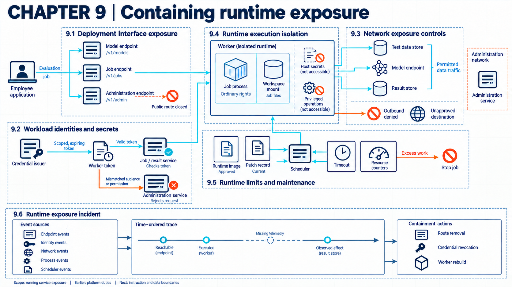

9 Service intrusion and exhaustion
Exposed interfaces, stolen credentials, unrestricted network access, and excessive work can compromise an AI service or make it unavailable to legitimate users.

An AI job service accepts requests, gives workers access to data, and allocates compute. An attacker may try to enter through an exposed administration interface, reuse a stolen worker credential, send data through an allowed network path, or consume the capacity needed by other jobs. These routes affect different controls. Restricting one endpoint does not, for example, limit the compute consumed by a caller who is already authorized.
Assume the organization operates the job service and model server on rented infrastructure. Each worker runs with a service identity. The execution-isolation controls (Chapter 08) limit what its process can reach on that platform. Service security adds the checks on incoming calls, credential use, network destinations, and resource consumption, together with a way to stop harmful jobs while retaining essential service.
9.1 Exposed service functions
An overlooked interface can let calls skip checks on better-known endpoints because the inventory missed that interface. A deployment interface accepts commands or configuration for workloads. An administrative endpoint can change platform state. A job-submission API accepts work and parameters for execution.
NIST container guidance treats orchestrators and runtime interfaces as high-value control surfaces and identifies unbounded administrative access as an orchestrator risk.1 Kubernetes guidance states that kubelet API access should be restricted and not exposed publicly, a checklist item the team must apply to the deployed Kubernetes version.2 Neither source inventories the AI notebook, scheduler, or model-server products in a given deployment, so product-specific checks remain necessary.
Reviewers enumerate notebook servers, model endpoints, schedulers, orchestration interfaces, management consoles, and health or metrics endpoints, recording network reachability and permitted operations for each. The design under review places a gateway and network policy in front of them, configured to admit a call only for a known caller identity from a permitted source network requesting an allowed operation on the intended endpoint. A receiving service should reject calls that fail those checks.
Example
Reviewing deployment interfaces. Suppose reviewers compare a job service inventory with reachability tests from an external network and an approved internal network. They also test the model and job APIs using controlled identities. The model API is available through an internal gateway, and the job API through the internal network. An administration page responds from the internet even though its inventory entry permits only internal access. No administration login is attempted.
| Interface record | Intended caller | Observed reachability | Authentication result | Documented capability |
|---|---|---|---|---|
model-api |
support application | internal gateway only | employee session rejected | none |
job-api |
build service | internal network only | build identity accepted | submit job |
admin-ui |
platform operator | internet reachable | Not tested; login page returned | Change configuration; not attempted |
Conclusion. The admin-ui route is an exposure that needs removal or a justified access path. It is not evidence that anyone authenticated or changed state through it.
The result is unexpected reachability among the inventoried interfaces, recorded separately for each tested network. Finding zero unexpected routes after a repair means none was found within that inventory and those test locations. Intended routes may remain available. Restricting administration can slow urgent maintenance, while an omitted endpoint or an alternate route remains outside this result.
9.1.1 Worker access after admission
After a call passes the gateway, the worker process may need files, devices, and network access to perform the job. Its service identity does not by itself restrict host mounts or process privileges. The execution boundary (Chapter 08) applies those limits, while the receiving services independently check the worker’s credentials and requested operations.
9.2 Stolen workload credentials
Shared or long-lived credentials make it difficult to limit or attribute what a service does. A workload identity identifies a non-human process or service. A service account is one way to give a workload such an identity. Token lifetime is the period for which a credential can authorize requests.
Kubernetes service accounts supply workload identities that can be bound to permissions through role-based access control.3 NIST’s cloud-native zero-trust model recommends short-lived, cryptographically verifiable service identities with service-to-service authorization.4 A service account remains an identity mechanism only: secure permissions, token handling, and any external federation stay deployment choices, and the recommendations do not prove a particular identity plane cannot be bypassed.
The design binds each interface call to a workload identity and checks its role before the operation runs. Short-lived credentials arrive through a controlled mount or exchange, scoped to the smallest audience and operations the job needs.
Example
Tracing a job token. Suppose an employee submits a request to evaluate a test set. The application creates job-417 and obtains a worker token with subject eval-worker, audience job-api, scope jobs:read,results:write, and an expiry fifteen minutes after issue. The job service verifies the issuer and signature, checks that the token is current and intended for that service, and checks the requested operation against both the scopes and the worker’s assignment to job-417. Assume those checks pass for the assigned read.
The worker then presents the same token to model-admin. That service rejects it because the audience differs and the token provides no administration permission. The example tests two service decisions. It does not show that the credential cannot be stolen or that every service validates it correctly.
The receiving service should validate the credential, its issuer, intended audience, lifetime, and the requested resource and operation. If the design supports revocation, the service also needs a way to obtain and enforce that state. A self-contained token checked only offline may remain accepted until expiry unless an additional deny rule is applied. Short lifetimes reduce that window but add issuance traffic and dependency on the identity service. Tests therefore cover the actual service-operation pairs and credential states, including expired or revoked credentials where those mechanisms exist. Disabling future access does not erase data already copied by a worker.
9.3 Unrestricted network access
A workload identity loses much of its value if traffic can simply bypass the enforcement point. Ingress enters a service boundary, while egress leaves it. Control traffic changes system state or configuration. Data traffic carries prompts, model inputs, outputs, or stored records.
NIST SP 800-207A places cloud-native access policy around application and service identities, with gateways or proxies enforcing identity and network policy. This reference architecture does not prove a deployed proxy cannot be bypassed.5 NIST container guidance recommends controlling container egress with application-aware filtering where changing addresses limit traditional network rules, without supplying one policy for every AI data and control flow.6
The design maps each required flow to a source identity, destination, protocol, and purpose, denies flows outside that map, and records each decision for review.
Example
Tracing evaluation traffic. Suppose a worker must read a test object, call an internal model endpoint, and write a result, with the approved flow record naming those destinations and denying other egress.
| Event | Source identity | Destination | Policy result | Observed result |
|---|---|---|---|---|
| 1 | eval-worker |
test-store |
allow read | object case-18 returned |
| 2 | eval-worker |
model-api |
allow request | response resp-903 returned |
| 3 | eval-worker |
results-store |
allow write | result run-417 stored |
| 4 | eval-worker |
203.0.113.25 |
deny | connection blocked |
Conclusion. The blocked fourth connection demonstrates enforcement on the tested path. It does not explain why the process attempted that connection, nor whether alternate routes are closed.
A test can report prohibited connections blocked out of all attempted prohibited connections, alongside required connections completed out of all attempted required connections. Mixing both groups into one blocked-traffic fraction would obscure whether either rule worked. Narrow rules need maintenance as destinations change. DNS changes, an unchecked proxy, or another network interface may create a path outside the tested policy.
9.4 Excessive resource consumption
A legitimate job can consume excessive capacity or cost, even when its credentials and software are approved. A long generation loop, many concurrent jobs, or repeated tool calls can prevent other work from finishing. A runtime patch updates execution software to correct a defect. A resource quota limits consumable compute, memory, storage, or concurrent work. Runaway computation continues beyond the intended cost or time.
NIST guidance recommends monitoring container runtimes for vulnerabilities, remediating findings, and blocking deployment to unmaintained runtimes. It does not set a patch deadline or establish effectiveness in a particular cluster.7 NCSC guidance recommends monitoring behavior and treating changes to data, models, prompts, or software as updates that need testing and version handling. It does not define accelerator quotas or a scheduler-specific containment method.8
The working design pairs an approved runtime version and vulnerability response with job timeouts, quotas, concurrency limits, and billing alerts. The scheduler admits further work or stops running work based on job identity, requested resources, current use, elapsed time, and concurrency state. Accelerator and scheduler limits beyond that need the product documentation and direct tests for the selected platform.
Example
Testing time and concurrency limits. Suppose a batch inference job is configured to request repeated generation without a stopping condition, against reference limits of ten minutes, eight gigabytes of memory, and two concurrent workers. At minute six the job holds 7.4 GB. At minute eight its request for a third worker is denied. At minute ten the scheduler stops the remaining processes and records limit=time.
Conclusion. The configured time and concurrency controls produced a bounded failed job instead of completion. The numbers test this configuration only and do not establish suitable limits for a real model or accelerator.
Stopped over-limit jobs are reported out of all intentionally over-limit jobs, with clean completions out of all ordinary cases kept alongside; any justified limit change needs both groups run again under the revised threshold, whose result still does not transfer to a different workload. Tight limits reduce cost exposure but can reject legitimate long work, while an unmetered service or work split across identities escapes a local quota.
9.5 Containment and service continuity
An exposed endpoint shows reachable capability, not everything that happened afterwards. Execution exposure is an interface condition that permits unauthorized or unsafe execution. Propagation is movement from the first affected workload to another system. Attribution evidence supports a conclusion about who caused an event and with what confidence.
NCSC guidance recommends logging inputs and monitoring behavior to support audit, investigation, and remediation.9 NIST container guidance identifies misuse of a container to attack other containers, hosts, or systems as a possible failure. Establishing that such propagation or resource theft occurred requires evidence from the affected system.10
Investigation orders the exposed route, authentication records, request logs, workload creation, process events, credential use, network flows, and resource consumption by time. Missing telemetry marks a gap in the record rather than proof nothing happened there, and runtime or tool output from outside the trust boundary enters the data path with its source label attached.
Example
Replaying a resource test after containment. Suppose responders stop the over-limit batch job and approve a shorter limit of eight minutes. They preserve the available worker events, cancel related harmful jobs, and compare recorded usage with billing records. A test repeats both the intentionally over-limit job and ordinary jobs under the new setting.
Assume the over-limit job is stopped at eight minutes and all ordinary test jobs finish within six minutes. Those observations support the new limit for these cases. They do not establish who caused the original runaway or exclude activity outside the recorded window.
Stopping one workload can release capacity for essential services, but stopping a shared identity service or network path may interrupt those services too. A continuity plan can specify which operations remain available and which may be suspended. Containment and evidence collection need a case-specific order: responders preserve volatile records where feasible without prolonging active harm, but an ongoing disclosure may require blocking access first. Revocation does not inherently erase logs, and preserving evidence is not a universal reason to delay it.
After restricting the affected paths, responders can rebuild a worker and repeat the relevant access and resource tests. An unknown credential or an unlogged route may remain outside that verification. Restoring the worker cannot undo earlier transmissions or business operations. A host operator can also delay or stop the workload, so application-level continuity remains dependent on the underlying platform. The fuller response method is developed in recovery (Chapter 16).
The service record feeds later work: sequence budgets for agent tasks build on these runtime limits in agent task budgets (Chapter 13), shared release testing in release decisions (Chapter 14), live observation in system monitoring (Chapter 15), and incident recovery in recovery (Chapter 16).
Note
Chapter checkpoint. A review finds an internet-reachable administration page, a shared worker credential, unrestricted egress, a host filesystem mount, and no job timeout. Which records and changes would show the runtime contained for an evaluation job?
Note
Note
Answer. Record the intended caller and permitted operation for every interface, then remove the public route or place it behind an approved access path. Give the evaluation worker a short-lived identity limited to the job and result services. Allow only the required storage and model flows, remove the host mount, and set tested time, memory, and concurrency limits. Repeat the interface, identity, network, isolation, and resource traces and retain each allow or deny result. Passing those checks supports only the tested configuration. It does not prove the runtime has no unknown vulnerability or alternate route.
Starter literature. These sources provide the initial evidence base for the chapter and guide later research, but they do not support every claim by themselves.
Murugiah Souppaya, John Morello, and Karen Scarfone, Application Container Security Guide, NIST SP 800-190 (2017), Section 3.3, especially 3.3.1, printed pp. 15-16, source. Checked September 16, 2026.↩︎
Kubernetes contributors, “Security Checklist,” Kubernetes documentation (living page), “Network security” and “Authentication and authorization,” source. Checked September 16, 2026. This living checklist must be applied to the deployed Kubernetes version.↩︎
Kubernetes contributors, “Service Accounts,” Kubernetes documentation (living page), “What are service accounts?” and “Grant permissions to a ServiceAccount,” source. Checked September 16, 2026.↩︎
Ramaswamy Chandramouli and Zack Butcher, A Zero Trust Architecture Model for Access Control in Cloud-Native Applications in Multi-Cloud Environments, NIST SP 800-207A (2023), Section 3.1, ID-SEG-REC-2 and ID-SEG-REC-3, printed p. 8, source. Checked September 16, 2026.↩︎
Ramaswamy Chandramouli and Zack Butcher, A Zero Trust Architecture Model for Access Control in Cloud-Native Applications in Multi-Cloud Environments, NIST SP 800-207A (2023), abstract and Sections 2-3, source. Checked September 16, 2026.↩︎
Murugiah Souppaya, John Morello, and Karen Scarfone, Application Container Security Guide, NIST SP 800-190 (2017), Section 4.4.2, printed pp. 24-25, source. Checked September 16, 2026.↩︎
Murugiah Souppaya, John Morello, and Karen Scarfone, Application Container Security Guide, NIST SP 800-190 (2017), Section 4.4.1, printed p. 24, source. Checked September 16, 2026.↩︎
UK National Cyber Security Centre, CISA, and international partners, Guidelines for Secure AI System Development, version 1.0 (2023), Secure operation and maintenance, PDF p. 16, source. Checked September 16, 2026.↩︎
UK National Cyber Security Centre, CISA, and international partners, Guidelines for Secure AI System Development, version 1.0 (2023), “Monitor your system’s behaviour” and “Monitor your system’s inputs,” PDF p. 16, source. Checked September 16, 2026.↩︎
Murugiah Souppaya, John Morello, and Karen Scarfone, Application Container Security Guide, NIST SP 800-190 (2017), Section 3, printed p. 13, source. Checked September 16, 2026.↩︎
Murugiah Souppaya, John Morello, and Karen Scarfone, Application Container Security Guide, NIST SP 800-190 (2017), Sections 2-4, source. Checked September 16, 2026. Relevant topics: images, registries, orchestration, containers, host systems, and countermeasures.↩︎
Ramaswamy Chandramouli and Zack Butcher, A Zero Trust Architecture Model for Access Control in Cloud-Native Applications in Multi-Cloud Environments, NIST SP 800-207A (2023), Sections 2-3, especially ID-SEG-REC-2 and ID-SEG-REC-3, source. Checked September 16, 2026. Relevant topics: service identity and service-to-service authorization recommendations.↩︎